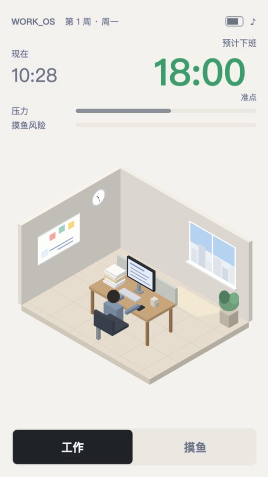
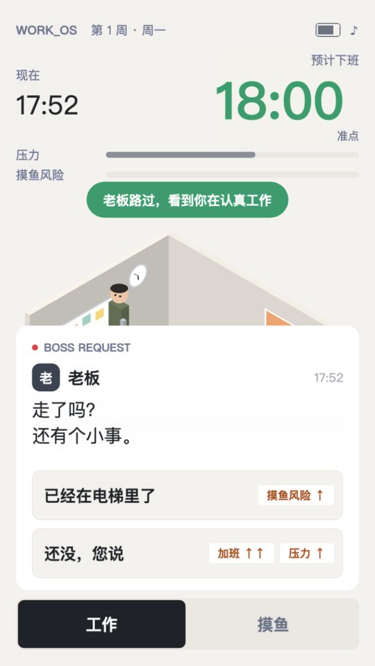
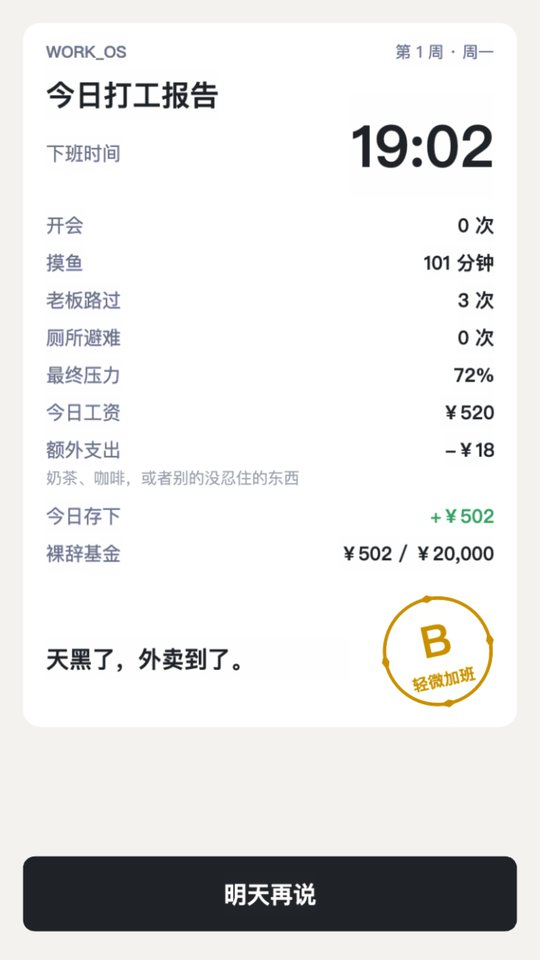

WORK_OS · 预计下班
18:00
今天几点下班
一款关于“今天怎么准时走，最终怎么永远走”的小游戏。
即将登陆 TapTap 小游戏



游戏
一天两分半。在工作和摸鱼之间切换，应付老板、会议和群消息，把预计下班时间拉回六点。
工作让下班时间往前走，也让压力往上涨；摸鱼能喘口气，但下班会变晚，老板路过时还得赶紧把手机藏起来。每天的工资扣掉打车和冲动消费，剩下的存进裸辞基金。攒满的那天，会出现一个你从没见过的按钮：【辞职】。
- 类型
- 职场生存 / 轻经营 / 休闲
- 平台
- TapTap 小游戏
- 单局
- 约 2.5 分钟
- 状态
- 即将上线
Clock Out Studio
一个很小的独立游戏团队。我们想做小而完整、好笑但不廉价的游戏：一局能在碎片时间玩完，题材来自每天都在经历的普通生活，画面干净，不靠弹窗和充值留住人。
Made by Clock Out Studio
Press Kit
截图、图标、字标和游戏介绍可以在报道本游戏时自由使用。


完整素材包（高清截图、宣传图、字标）请通过下方邮箱索取。